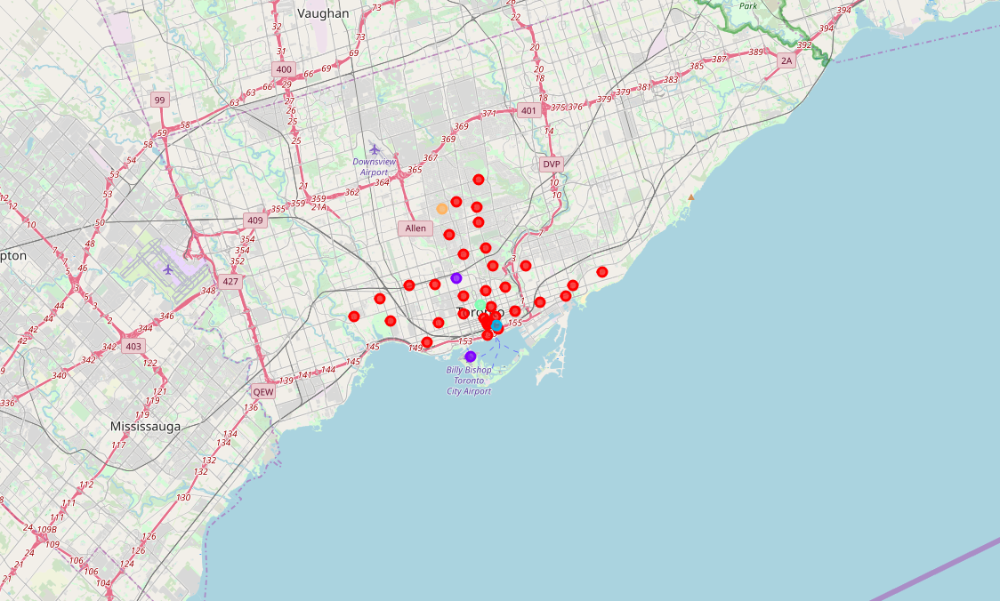

Created by Carlos Wilfredo Alayon
The Beaches The Danforth West,Riverdale The Beaches West, India Bazaar Studio District Lawrence Park Davisville North North Toronto West Davisville Moore Park, Summerhill East Deer Park, Forest Hill SE, Rathnelly, South Hill, Summerhill West Rosedale Cabbagetown, St. James Town Church and Wellesley Harbourfront, Regent Park Ryerson, Garden District St. James Town Berczy Park Central Bay Street Adelaide, King, Richmond Harbourfront East, Toronto Islands, Union Station Design Exchange, Toronto Dominion Centre Commerce Court, Victoria Hotel Roselawn Forest Hill North, Forest Hill West The Annex, North Midtown, Yorkville Harbord, University of Toronto Chinatown, Grange Park, Kensington Market CN Tower, Bathurst Quay, Island airport, Harbourfront West, King and Spadina, Railway Lands, South Niagara Stn A PO Boxes 25 The Esplanade First Canadian Place, Underground city Christie Dovercourt Village, Dufferin Little Portugal, Trinity Brockton, Exhibition Place, Parkdale Village High Park, The Junction South Parkdale, Roncesvalles Runnymede, Swansea
Toronto Clusters
